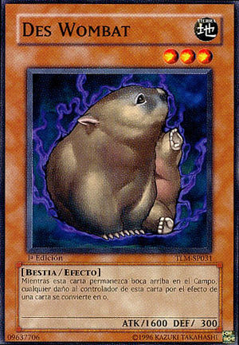

Yu-Gi-Oh! GX
 De: La Frikipedia, la enciclopedia extremadamente seria.
De: La Frikipedia, la enciclopedia extremadamente seria.
| De la serie anime para todos:
|
| Yu-Gi-Oh! GX
|
|
|
| TODO se resuelve por duelos, desde quien se come la ultima galleta, hasta quien va primero al baño
|
|
| Género:
|
Cartas del tarot
|
| Episodios:
|
180
|
| Autor del manga:
|
no se sabe
|
| Publicación:
|
769 d.Y.(despues de Yu-Gi-Oh!)
|
| Publicado en:
|
Nipon, America, Rusia
|
| Director del anime:
|
un tio sentado en una silla
|
| Transmitido en:
|
en escuelas de retraso mental por todos los canales.
|
| Ovas:
|
0,3 aproximadamente
|
| Películas:
|
una, donde se juntan los tres tios de estas series
|
| Notas
|
Nadie sabe que significa GX
|
«Creo en el satanismo corazon de las cartas»
~ Jaiden cuando juega drogado
«Nada se termina hasta que la ultima hierba carta sea fumada jugada»
~ Jaiden cuando aun no se droga
Es la secuela de la serie de cartitas hentai llamada ya llovio Yu-Gi-Oh!,trata de las aventuras de un niño muy torpe llamado jaiden yuki que gana todos sus duelos y reparte hostias a todo el mundo con sus cartitas de heroes elementales que estudia en la academia para la gente que desperdicio su vida de duelos
Jaden luego de fumarse 10 porros seguidos
 una de las cartas de fusion de jaiden,es fusionable con todas las cartas de su mazo
Personajes
El idiota principal protagonista
- Jaiden yuki: un pobre niñato que no tiene ni un minimo ceso,hasta el punto en que un chimpance piensa mas que el,sus padres se dieron cuenta de que su hijo
era un gilipollas que le hablaba a los naipes egipcios tenia un don en los duelos y lo metieron en la academia desperdicio de vida de duelos,el muy gilipollas no cogio ni una respuesta en el examen escrito y le toco violar ganarle al profesor mas marica y metrosexual de la academia,el dr gayler,se volvio el novio mejor amigo de Syurus trusdale y tambien amigo de Bastion misawa (alias mr trampas o el ñoño de la clase) y de Chumley Huffington un gordo el se toma los duelos muy enserio,si tu te los tomas tan enserio como el,eres un
otaku de primera y te quedaras virgen hasta la muerte
160 duelos y medio muchos duelos que han tenido en toda la serie,solo ha perdido 3 veces,contra Zane trusdale ( alias el cibernetico ) del cual se corren rumores de q jamas a tenido una parola ( cachonda ),Kaibaman un tipejo que se creia Seto Kaiba y contra Astro Phoenix,un niño ricachon hijo de papi que es el juguete sexual del segundo villano de turno Sarcofagorius ( tengan en cuenta que este tipo parece una momia de 3000 años sacada de un sarcofago ),sus cartas son heroes elementales que solos no sirven ni para quemar tiempo pero se fusionan y hacen que jaiden gane,aunque en una parte de la serie tenia cartas de astronautas y de dibujitos hechos por el ( el chico esta medio fumao ) y su espiritu lambebolas de duelo es el kuribo alado.
Sus lambebolas mayates
- Syrus Trusdale: un medio mariquita niño
novio mejor amigo de Jaiden,siempre fue opacado por su hermano,primero su hermano no tenia sexo,syrus era ( y es )homosexual( asexual le gana a homosexual ),su hermano era mucho mejor en duelos, tenia esa personalidad de sacaputas y tenia notoriamente mas personalidad ( y syrus es muy feito ), siente mas miedo que alguien amenazado a muerte por el propio chuck norris ( uyy,horrible experiencia al q le pase eso ) y le da miedo absolutamente todo,handa cagao en los calzones y ademas se le pego la gonorrea y por eso nadie lo quiere,sus cartas son carritos y avionsitos con ojos ( el chico ve mucho al inspector gatjet por television )
- Chumley Huffington: un gordo que se come hasta su propia polla,tiene cara de koala y sus cartas son unos koalas ( bien mariquita es ) su familia hace sala picante,hasta el punto de que se emborrachan a punta de sala picante ( de por dios ) y levantan pesas y son " muy machos " aunque al parecer chumley no les heredo ni poquito ya que sus cartas son mariquitas,es un reprovado que se tiro 3 veces el año,por inpopular no aparece despues de la primera temporada.
- Bastion Misawa:el mas ñoño de la academia,hace trampa ya que tiene como 7 masos utiliza solo 1 ( aparentemente ) pero en realidad los demas estan debajo de las mangas,ademas cada mazo esta hecho para derrotar a alguien en especifico,sus cartas son unas ñoñadas como espermatosoidon y ovulodon,al fusionar 1 erpematosoidon con 1 ovulodon queda el dragon feto,
hasta en el momento e la fusion se pueden ver imagenes XXX,todas las cartas que quiere las consigue y como ? en la mafia imprimiendolas a alta resolucion.
- Tyrano Hasselberry : un tipo que comio mucho jurassic park ) y las excavaciones antiguas ( tambien se vio todas las de indiana jones)
- Alexis Rhodes: la unica mujer
y pechugocha del grupo quiere tirarse a Jaiden pero este es un homosexual y ya esta enoviado con syrus,tiene la misma edad de Jaiden,pero este parece un niño y ella toda una pechugocha señorita,es una obelisco azul,su baraja esta compuesta por
ciberchicas,(basura) antes tenia sus amigas con las que podia echarse dedo conversar sin temor,pero ahora tiene puros amigos hombres.no lo dice pero le encanta el yaoi
- Blair Flannigan: bueno,contradiciendome alla arriba,esta es otra mujer del grupo,aunque no la conte anteriormente porque no es un personaje muy importante,es una perra que se quiere tirar a todo mundo,primero a Zane ( por su personalidad de sacaputas y seriedad),luego a Jaiden( razon desconocida),luego a " el Chazzco "( por ser millonario,ya que este ultimo no tiene ni un encanto nisiquiera para el duelo) luego a Marcell ( un mariquita hijo del sub-director bonaparte ) sus cartas son
putas doncellas que exitan enamoran a los monstruos.Esta perra hijuemadre es inncreible En 6 Meses La chavalita esta crecio para quedar como Una Puta de las buenasAlguien Muy Madura
- jim
(cocopollas cocodrilo:tiene un ojo bionico pero se lo tapa como el gilipollas que es por que lo pueden molestar en la academia de frikis es un "vaquero" que tiene un cocodrilo que nadie sabe lo que hace con el (ella) en las noches y un latigo (tampoco se sabe que hace con el) con el cual pelea, y al igual que los demas no puede derotar a yaiden cuando es puta malo por que yaiden es muy weon muy fuerte(tramposo)
- Jesse Anderson: el es uno de los pocos que son iguales de gilipollas a Jaiden,es igual de pendejo, sin mencionar que tiene nombre de niña,tambien le habla a los
naipes egipcios espiritus de los monstruos,bueno este es un poco menos pendejo,pero aun asi es el tercero mas imbecil de la serie ( despues de Hasellberry y Jaiden respectivamente ) su mazo son unas cartas gema ( sabian que el muy rarito habla con ellas ) que al ser destruidas toman forma de una gema,al estar todas estas gemas de invoca al dragon super metrosexual de las gemas,pero el muy marica no tiene este dragon en su mazo,por lo tanto,nos da a entender que es un completo gilipollas. Por cierto no es mujer, aunque el nombre lo indique.
sus sacos de hostias rivales
- Dr. Verga Crowler:El unico transexual de la serie que lo demuestra con su maquillaje de tia cuarentona y su vestimenta travesti. Quiere eliminar a toda costa a los alumnos de Slifer Rojo para pajearse con tranquilidad en todo los dormitorios con la protesis de pinga hecha de metal oxidado que tiene(se quedo mocho cuando le busco pelea a Chuck Norris y este le dio un patadon en los cojones)por lo cual tiene un mazo hecho de maquinas oxidadas tipo transformer que se las robó a los Power Rangers(con eso hizo su protesis), desde ahi se tuvo que ir a la academia de duelos para que no lo
viole atrapen. Dice tener doctorado en duelos pero en verdad tiene doctorado en prostitucion (Gigolo). Se para frotando la verga (o lo que queda de ella) con el Vice-rector Bonaparte.
- Bastion Misawa:bueno es un lambebolas y a la vez un saco de hostias ( la historia esta mas arribita)
- Chazz Princeton( alias " el chazz",por el mismo,en japon Manjoume-sanda,traducido como manjoume-thunder,pero para mi es "el chazzco ") es un tio que habla mas que tu abuelo contandote su vida,es de lo mas egocentrista,pero casi siempre pierde,bueno,al comienzo era el tercer mejor duelista hombre de la academia,despues de zane trusdale y atticus rhodes en ese orden,atticus fue secuestrado por la guerrilla y chazz quedo como el segundo,era el capitan de los duelistas de elite( hasta tenia unos lambebolas),en ese entonces llego jaiden,como este ultimo era el estudiante mas nuevo,era el ultimo en la tabla de posiciones,a chazz le dieron unas buenas hostias y perdio,por lo tanto quedo el ultimo en la tabla,y jaiden paso a ser el segundo.luego callo en las trampas de bastion y perdio de nuevo ( tambien es que su suerte no es
chazz recordando su sueño erotico de un trio con Alexis y Jaiden
sus cartas son dragones armados,catapultas con nombres de letras y sus espiritus son 3 oyamas de lo mas horribles que le lamben las bolas dias y noches enteras.
- Astro/Aster Phoenix: uno de los mejores duelistas de esta tonta serie,le gano a jaiden pero luego perdio la rebancha,le gano a zane ( este ultimo es mejor duelista de la serie, lo debo decir ) pero perdio contra chazz,lo que lo deja como alguien con menos alcurnia de la que tenia,es un hijo de papi,ricachon que anda hablando por su celular y siempre anda con corbata,en sus primeras apariciones era el juguete sexual de sarcofagorius ( mejor conocido como la bruja Dioselina del rosario ),pero luego se libero porque habian mas gigolos afuera en el mundo que le darian mas de lo que la bruja dioselina le daria.
su mazo es mas o menos la copia del de jaiden,tiene heroes elementales pero que al fusionarlos le dan monstruos diferentes y tiene heroes del destino,que fueron cartas hechas por su papa,al comienzo tenia un mazo hecho de las peores cartas de la historia y se dejo ganar por jaiden.no lo dice pero le gusta ver porno,pero es solo para discimular,porque en lo profundo es un gay.

(Zane y Astro, fueron victimas del fotomontaje al ponerlos al lado de jaden, ya que estos jamas se rebajarian a salir en una foto con el
- Zane Trusdale: El unico saco de hostias que no es un saco de hostias,ya que es el unico que le a ganado a jaiden,pero que no ha perdido la rebancha ( o la primera pelea como ese tio chazz,que ademas perdio todas las rebanchas),su mazo esta hecho de ciber culebras y secundariamente de ciber dragones,este tio seguramente es el mas de buenas de la serie,pasaron los 2 primeros turnos y ya tiene un monstruo de 8000 puntos de ataque en el campo,en fin,este tio era el mejor duelista de todos,era un sacaputas,se tiraba a Alexis,pero perdio contra una vampira,pero esto no le dolio,ya que el tio se dejo ganar para salvar a su hermano ( yo no lo hubiera hecho),pero luego gano el torneo de cartas,era el campeon,perdio contra Astro,entonces entro en la depresion y llego un tio que se creia mago y lo puso a luchar en una jaula con un gorila con disco de duelo,como el gorila le estaba ganado y
le daba muchos choques sexuales le estaban pasando muchos choques electricos,el tio se encabrono,saco un monstruo ni el mas hijueperra y gano,luego se volvio un mafioso,y le robo un mazo a su antiguo maestro,y eso que el otro era mejor pero bueno,era un mazo que mientras mas cartas tenia en el cementerio,mas oportunidades de ganar tendria,despues de ganar muchos duelos,volver a ser campeon,siguio asi,y quien sabe cuando dejara la mafia antes de que lo agarre la policia.
- Atticus Rhodes:Es el hermano de Alexis,es un gigolo de segunda,que le gustan los deportes extremos,todas las noches se tira 10 diferentes en un mismo acto,esta demente,esta aun mas perdido que Jaiden,quiere ser cantante,pero le hiria mejor si siguiera como duelista,es el mejor amigo de Zane,cuando este se fue,Atticus paso a ser el mejor duelista de la academia,a sabiendas de que Jaiden le gano,en fin,el buen mazo que tiene es de cartas de oscuridad y de fuego,teniendo al dragon de ojos rojos en su mazo,y el mazo malo,es una gilipolles,que tiene que ver con sets,luces,camaras, paparatzis y otras maricaditas de la farandula,se le vio como un jinete de las pollas,llamado,follo nocturno.
- Axel Brodie:( alias negro acacio o negro trucu tru ) es un negro africano que cree que la vida no puede ser vivida sin riesgo,era el juguete sexual de Bipper,pero despues se revelo,sus cartas tienen que ver con fuego,ya que el esta prendido.
Trama
Los comienzos
Los creadores de yu gi oh no sabian que hacer, tenian que vender sus cartas a los frikis y volverse tan ricos para comprarse su burdell propio dentro de la casa, pero ya no tenian que ponerle a la primera parte, entonces decidieron invetar relleno llamado yu gi oh 2, pero los creadores alargaron mucho este relleno y como no querian igualar el extremadamente exagerado relleno de naruto, se inventaron que era la segunda parte y como yu gi oh 2 era poco original, entonces le pusieron yu gi oh GX ( solo Chuck Norris sabe la razon de este nombre ).
La serie empieza con el chaval este corriendo a toda leche, ya que llegaba tarde a unos exámenes de duelos. En medio camino se tropieza con un misterioso desconocido que nadie conoce. Este amable desconocido le da a Jaden una carta del duelo de monstruos (Lo normal sería echarle una bronca por ir corriendo sin mirar, pero en vez de eso le recompensa dándole una carta). Jaden se despide del misterioso desconocido cuya existencia nunca se revelará y se va a sus exámenes de duelos.
Claro, que por llegar tarde le ponen un examen mucho mas difícil que a los demás. La gente normal se enfrentaba a duelistas de baja categoría, pero a Jaden le toca enfrentarse contra Crowler el tio mas travesti de la serie, uno de los mejores duelistas de la escuela de duelos. Como no, Jaden gana a Crowler y pasa el examen, gracias a la carta del amable desconocido y a sus grandes trampas. Ah, y por si no lo había dicho antes, Jaden hizo el examen para ingresar en la academia de duelos, un lugar lleno de duelistas. ¿Conseguirá Jaden convertirse en el mejor duelista del mundo?[1]
la academia de frikis
Una vez en la academia, Jaden descubre que en el sitio hay tres tipos de estudiantes: Los Slifers, que son los mas malos (es decir, gente como Jaden), los Ra, que son los normalillos, y los Obeliscos, que son los mas buenos, o al menos eso dicen ellos. Dependiendo de la categoría a la que perteneces se te da un dormitorio diferente, bueno, pues mientras los Obeliscos y los Ra tienen palacios dignos de un rey, a los Osiris les toca una chabola llena de ratas, y encima con tres camas en cada habitación (No, no te podía tocar con ninguna chica porque las chicas están todas en la categoría Obelisco, y no precisamente por sus habilidades como duelistas). Y encima Jaden tiene mala suerte con sus compañeros, ya que le tocan un marginado enano con el pelo azul(francamente patetico, y encima con voz de mujer ) y un gordo seboso con cara de koala que ha repetido curso varias veces. A parte de esto, los estudiantes tienen que preocuparse también por los exámenes. Si, en ese sitio se toman los duelos muy en serio.
Jaden encuentra la respuesta a todos los duelos : la trampa
Pues claro, es el protagonista y su misión es vencer a todos y demostrar lo tramposo que puede llegar a ser(bajo la excusa del corazon de las cartas). Eso sí, suspende todos los exámenes, pero al menos lo compensa ganando todos sus duelos, lo cual no le gusta nada al travesti Crowler, que le gustaría que echaran a Jaden de allí cuanto antes. Para conseguirlo, Crowler intenta constantemente que Jaden pierda contra alguien, enfrentándole contra los duelistas Ra y Obeliscos (No hace falta decir que Jaden se los funde a todos). Entre duelo y duelo Jaden también no se preocupa por ligar, y el tío lo consigue, ya que se lía con la niña de ALEXIS mas grandes de toda la academia, tía que a la vez mantiene una relación secreta con el hermano de Syrius (uno de los compañeros de habitación de Jaden), el cual mantiene una relación secreta con otras 20 chicas de la academia, las cuales estan todas liadas con Jaden.
por fin aparecen los sacos de hostias
Pues claro que hay malos, no puede haber una serie sin malos. Y en esta serie los malos son 7 maricas que se hacen llamar “Los jinetes de las sombras”, unos tipos que quieren vencer a los mejores duelistas de la academia para obtener como recompensa las mejores cartas de la academia. Y por si no lo habías deducido aún, si, Jaden se los carga a todos con sus buenas trampas cartas. Luego aparece el jefe de los jinetes, que decide no robar las cartas mas poderosas de la academia para intentar vencer a Jaden. ¿Hace falta que diga cual es el resultado del duelo? pues no, pero gana Jaden.
es que no faltaba...
como pueden apreciar, saga de yu gi oh que respete, tiene que ver con lavados de cerebro, envio de almas a un mundo raro, elegidos para vencer al mal, esta saga de yu gi oh GX es todo lo que acabo de decir, solo que tiene de extra a la bruja dioselina ,quien ve el futuro pero tiene predicciones muy erroneas.
Jubel , el espiritu de duelo que no se sabe de que sexo es
Yubel esperando que alguien le diga que si es hombre o mujer
La serie continúa aún mas jaden es un rojo pero le da igual porque consigue ligar de cualquier, y este año llegan estudiantes nuevos que son, jesse anderson,adrian gecko,jim cook(steve irriwin)y axel brodie(version de 4kids) estos tipos llegan con un pofesor africano que todos saben que es malvado con solo decir su nombre lord vald.....mejor no desir el caso es que hay una fiesta donde les regalan pulseras muy fresas a los estudiantes y consumen su eneria, pero a la OMS(organisacion mundial de la salud) no les importan los duelistas, entonces jaden se fundio a todos los nuevos y al profesor para descubrir que su plan era enviarlo a la otra dimension...quieres saber como....!no se! pero estuvieron alli mucho tiempo y a Bastion (desapaecido en la segunda temporada) lo encuentran y los ayuda para salir de la diferente dimencion con el valioso aporte de hacer su tarea, mientras lo demas se estan comiendo sus cartas del hambre y yubel el nuevo antagonista de la serie posee al hijo de bonaparte y lo convierte en un emperador que convierte ala mitad de los estudiantes en zombis solo para jugar un juego de cartas con jaden y lo logra pero no gana jaden sino jesse anderson por que era un duelo en pareja en el que usa al dragon arcoiris la carta mas masculina del todo el anime que solo el(jesse anderson) y chuck norriz la pueden controlar. Ganando a un mounstro llamado/a Yubel (es hermafrodita) regresan a la academia...si quieres saber cómo...!para que, ya te dije que no sé! y Jesse desaparece (se pierde en la otra dimension). Jaden se culpa, se vuelve loco y quiere rescatarlo. Va a rescatarlo, pero va a otra dimension diferente (ya te dije que no se cómo). De tanta ira porque sus amigos no le creen más se vuelve el Rey Supremo de esa dimension (que es un cazador de almas de los duelistas y es tan malo que puede comerse a Naruto).Y la serie sigue en Japón (pero ya va en el episodio 180 y ya termino la serie y comenzo otra que sorpresa es como digimon ninguna otra serie )
Su emision en Nickelodeon
Los muy hijos de puta se llevaron la serie (muchas muchas comillas) a España y era emitida en Nickelodeon. Los de Nickelodeon se volvieron Gilipollas como le paso a mi hermano cuando vieron un capítulo, les paso lo mismo que le paso a los Simpson cuando viajaron a Japon y tuvieron un ataque epileptico cuando vieron un pequeño fragmento de "el ataque de los robots". Asi que la emitieron todos los días a las 7:30 para que a todos les pasase lo que le paso a ellos y crear un ejercito para poder dominar el mundo. Cuando emitian todos los capítulos, otra vez lo ponian, y otra vez, y otra vez...
Consiguieron lavarle el cerebro a mas de 10 millones de personas y, estuvieron a punto de dominar el mundo. Pero no pudieron, porque Chuck Norris se entero de lo que pasaba asi que le pego una buena ostia a el creador de Yu-Gui-Oh! GX y a los de Nickelodeon y dejaron de emitirla, por lo que las 10 millones de personas a las que lavo el cerebro volvio a ser normal. Pero desgraciadamente, el creador de Yu-Gui-Oh! GX pario a un hijo, (si, lo pario el, por lo que es un engendro de la naturaleza) y ahora el lleva la serie y ha conseguido que se vuelva a emitir en Japon, y ahora busca a Chuck Norris para vengar a su padre e intenta que la serie vuelva a emitirse en España y en otros paises, para intentar lo que su padre no consiguio: dominar el mundo...
Autor(es):
- Frikiman
- Azulejos
- Manamaster
- Cibercrank
- Lljosemll
- .:matt.thunder:.
- Bernalesgoku
- Dark temptation
- HellKaiser
- Michaels18
Frikipedia 2005-2016, Licencia
GFDL 1.2 - Extraído por FrikiLeaks